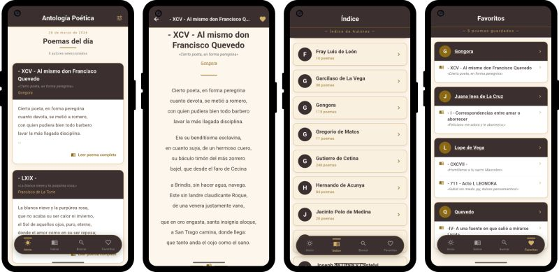

Ingeniero de la Energía
Poemario es una aplicación que reúne miles sonetos del Siglo de Oro español, permitiendo explorarlos y descubrir nuevos autores fácilmente.

La colección de poemas se ha extraído de la Biblioteca Virtual Miguel de Cervantes . El enlace a la aplicación en Google Play permite instalarla y acceder a toda la colección.